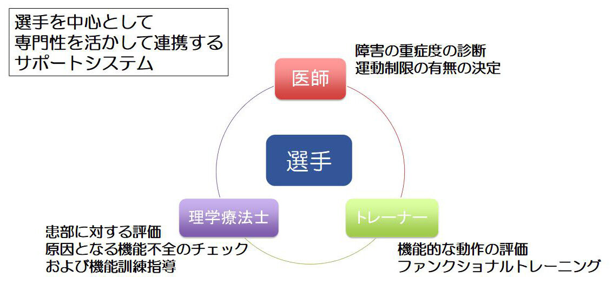
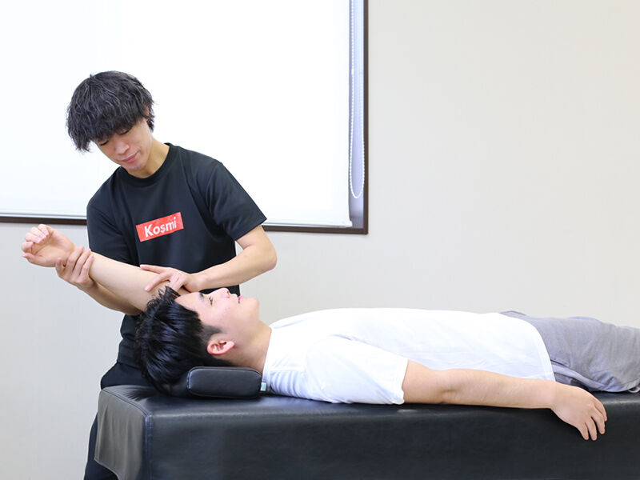
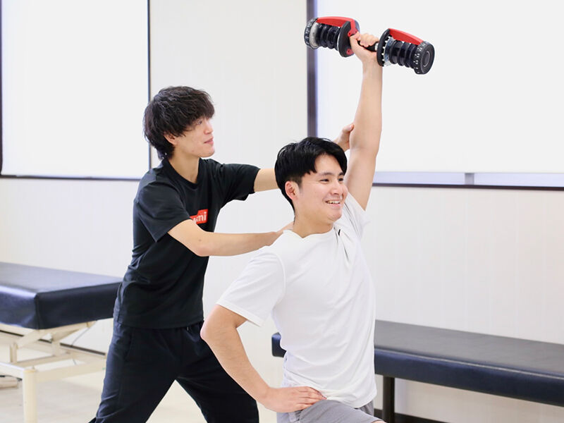

リハビリテーション（理学療法）とは
けがや疾患により、身体になんらかの障害を生じた方に対し、医師の指示のもとに、徒手療法、運動療法、物理療法を組み合わせて用い、痛みや動きの制限の原因となる問題を根本から改善する治療プログラムを提供します。
- 徒手療法；理学療法士の手技を用いた治療
- 運動療法；筋力や動きのトレーニング、機能改善のためのトレーニング
- 物理療法；電器治療や温熱療法など
リハビリテーションを実施する対象は、スポーツ選手だけでなく、五十肩の方、膝や腰の痛い方、股関節の動きが悪い方、肘や手首の痛い方など、地域の皆様に対しても幅広く対応いたします。


当院のリハビリテーションの特徴
医師・理学療法士・トレーナーが連携して治療にあたるアスリートサポートシステム
日本でも先駆的な試みとして、スポーツ傷害や手術後からの競技復帰を目指すスポーツ選手に対して、医師・理学療法士・トレーナーがそれぞれの専門性を活かして連携するアスリートサポートシステムを構築し、競技復帰だけでなく再発予防に向けてサポートをしています。
足関節捻挫や肉離れなどの急性の外傷に対して、早期からリハビリテーションを開始することでより早いスポーツ復帰を目指します。
日本代表チームや国体チームなどの帯同を行っている理学療法士たちが在籍し治療にあたっています。
〔実施例〕
- 野球肘やオスグット・シュラッター病など成長期特有のスポーツ障害に対して、成長発達に合わせたトレーニング指導
- 骨折や靭帯損傷により練習参加できないスポーツ選手に対して、体力やパフォーマンス低下を防ぐためのトレーニング指導
- 手術後（膝靭帯断裂や肩脱臼など）のスポーツ選手に対して、競技復帰に向けたアスレティックリハビリテーションの実施

EQUIPMENT ／ 設備の紹介


Reservation
休診日／木曜午後・土曜午後・日曜・祝祭日 ※受付は午前、午後とも30分前からです。